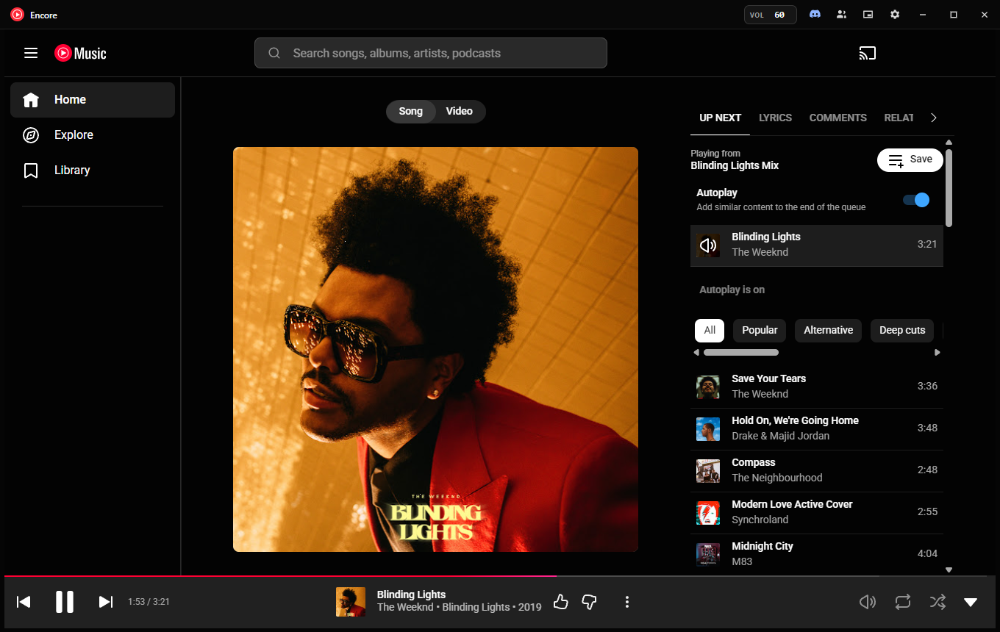
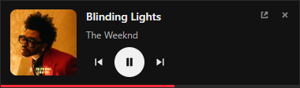

YouTube Music,
better together.
Encore is a free, tiny Windows app for YouTube Music. Listen in sync with friends, follow friends who use Spotify, and show what you play on Discord.

Listen together
Same song, same second. When the host skips, pauses or jumps ahead, everyone follows.
Listen along with friends
Start a session and share the code or link. Friends with Encore join in one click, or straight from the Listen along button on your Discord status.
Sync messages are end-to-end encrypted. The relay never sees what you play.
Follow a friend on Spotify
Your friend stays on Spotify; you hear the same songs here. Through Discord it's live, with skips, seeks and pauses. Through Last.fm it follows song changes.
No Spotify Premium needed, on either side.
Play Spotify playlists
Paste a Spotify playlist link and its songs play here as your queue, matched by title, artist and length. Nothing is saved to either account.
Everything else you'd want
It's the official YouTube Music website with your own account, so your library, mixes and Premium all work as usual. Encore adds the desktop features around it.
- Mini player: a small always-on-top window with artwork and controls.
- Controls everywhere: media keys, the Windows media flyout, taskbar buttons (⏮ ⏯ ⏭) and the tray menu with the current song.
- Discord status: song, artist, artwork and a live timer, with a Get Encore button for your friends.
- Last.fm scrobbling, with an offline queue.
- A volume that stays put: your level is remembered between launches, and the number in the title bar changes with a scroll.
- Automatic updates, checked against a SHA-512 fingerprint before installing.
- Opens where you left it, and starts with Windows or minimizes to the tray if you want.

Small and light
Most desktop apps for YouTube Music bundle their own copy of Chrome. Encore uses the WebView2 engine already built into Windows, so the download is about 4 MB.
Questions
Anything else? Ask on GitHub.
Windows says “Windows protected your PC”. Is it safe?
Windows shows that warning for new apps that aren't code-signed yet; we've applied for free signing for open-source projects. Select More info → Run anyway. Every release is built by GitHub Actions straight from the public source code, so you can see exactly what you're running.
Is this an official YouTube app?
No. Encore is an independent, open-source project, not affiliated with or endorsed by Google or YouTube. It shows the official music.youtube.com website. It doesn't download music or block ads, so artists are paid as usual.
Do I need YouTube Music Premium or Spotify Premium?
No. Encore works with free and Premium YouTube Music accounts, and none of the Spotify features need Premium.
Do my friends need Encore too?
To listen along, yes: they join from their own Encore. To follow a friend who's on Spotify, no. They keep using Spotify, shared through Discord or Last.fm. Following through Discord needs a free Discord bot of your own; the app walks you through the five-minute setup.
What does it send, and to whom?
No accounts and no analytics. Your YouTube sign-in stays on your PC. The app only talks to the services you use: YouTube Music, GitHub (update checks), and, if you turn them on, Discord, Last.fm, Spotify, and the encrypted listen-along relay. See the privacy details.
Mac or Linux?
Not yet. Encore is built for Windows 10 and 11.
How do I uninstall it?
Settings → Apps → Installed apps → Encore for YouTube Music → Uninstall. Your settings and sign-in stay in %USERPROFILE%\.youtube-music; delete that folder to remove them too.